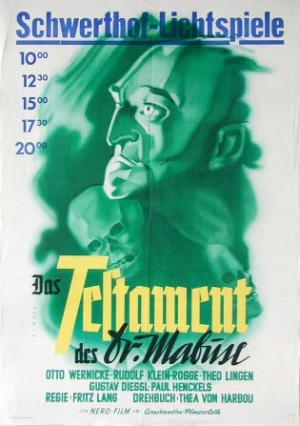

3:07 · 1 OPERA
The Reign of Criminality. A scene from Fritz Lang's 1933 film “The Testament of Dr. Mabuse.”
Il filo del discorso
Le quattro frasi tedesche disponibili formulano un programma di dominio attraverso la paura. Il discorso sostiene che le persone debbano essere scosse nella loro interiorità da delitti enigmatici e apparentemente privi di senso: azioni che non recano utilità a nessuno, ma servono a diffondere terrore. In questa rappresentazione il terrore diventa lo scopo dichiarato del crimine, non un semplice effetto collaterale. Il contributo è presentato come un estratto da Il testamento del dottor Mabuse di Fritz Lang, film del 1933; il controllo filmografico e alcuni fotogrammi sono coerenti con questa attribuzione. Si tratta di parole appartenenti a una finzione cinematografica, non di una tesi adottata dalla scheda o di una diagnosi su persone reali. Questa sintesi riguarda esclusivamente il breve nucleo verbale riconosciuto fra circa 59 e 101 secondi: le altre parti dell’estratto non vengono ricostruite dal titolo, dalla trama del film o dalle immagini campionate.
I libri nel discorso

Das Testament des Dr. Mabuse / Il testamento del dottor Mabuse (film, 1933)
Identificazione probabile
Note sul riferimento
Manifesto del film del 1933; data di stampa non accertata: Manifesto cinematografico tedesco della stessa opera, archivio DIF
Manifesto autentico catalogato dal Filmportal/DIF per Das Testament des Dr. Mabuse (1932/33), con Fritz Lang, Thea von Harbou, Otto Wernicke e Rudolf Klein-Rogge. La testata Schwerthof-Lichtspiele e gli orari appartengono a una programmazione locale; non è accertata la data di stampa né una prima distribuzione del manifesto nel 1933. Non copertina di un romanzo, non fotogramma, non immagine di un altro episodio della serie o del remake 1962.
Riferimento ricavato dalla trascrizione automatica.